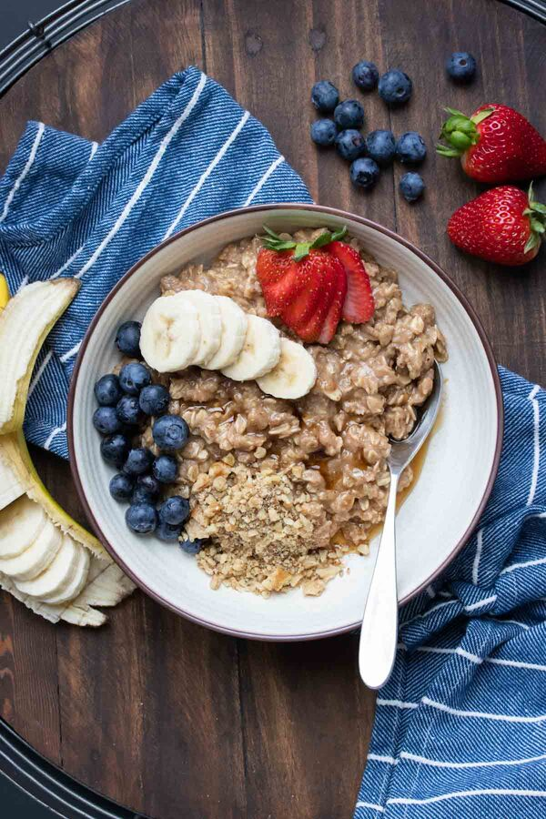

Creamy Vegan Oatmeal

Breakfast of vegan champions
Looking for the perfect way to start your day? This vegan oatmeal recipe is the ultimate creamy delicious choice
and it comes together in mere minutes!
Ingredients
- 1/2 cup rolled oats
- 2/3 cup canned lite coconut milk , or any dairy free milk
- 1 tablespoon almond butter (optional)
- 1 tablespoon maple syrup
- 1/4 teaspoon vanilla extract
- 1/4 teaspoon cinnamon
- pinch sea salt
Optional toppings
- nuts
- fresh fruit
- dried fruit
- seeds
- shredded coconut
- nut butter
- chocolate chips
Steps
- Add the ingredients into a pot over medium low heat and stir until just thickening. About 2-3 minutes.
- Remove from heat and add to a bowl. Use toppings of choice and enjoy!